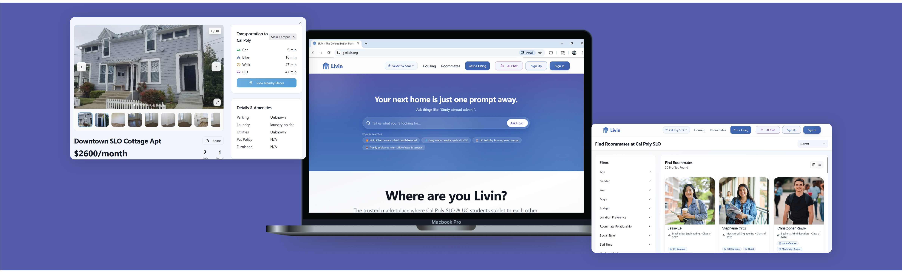

Livin
AI-powered housing and roommate search
Conducted user testing and worked with developer team to implement major brand and layout changes, including an all new AI chatbot.

Role
UX Designer
Tools
Timeline
12 weeks
Description
Collaborated with 4 designers and a team of developers to establish brand identity and consistency with new designs for the website landing page, roommate and housing finders, and AI chatbot.
Context
Livin is a platform that helps students and young adults find roommates and housing in one place. My team designed a new website that would allow the platform to pivot towards this goal. The crux of the new design would be Hoshi, an AI chatbot that allowed students to describe their living needs exactly and would curate housing and roommate recommendations based on their preferences.
Livin has been launched, but is still being iterated upon. You can view the live prototype here↗